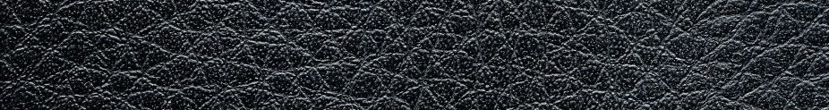

About Gusti
Gusti Leather is a company started only by one man, Christian Pietsch. He always had a lot of in common with goats, when he was 15 his parents decided to keep goats on the farm. After that Christian opened his own Company and named it after one of goats.
Company's range consists of 90% goat leather products.
These products are produced in certified factories and are tanned using chromium salt. Products are fully handmade and are produced from the leather of animals that are primarily bred for meat for example in India or Morocco.
If you want to get more information about production process and ecological approach of the company, check out Gusti Leather's YouTube channel and videos!
Find Gusti Lether on YouTube
@Gusti Lether